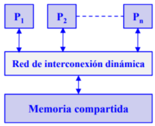
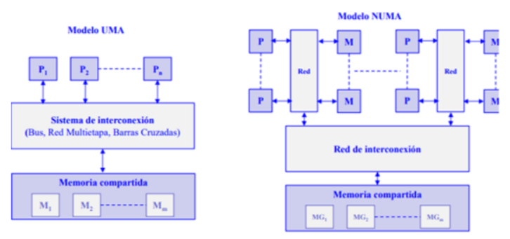
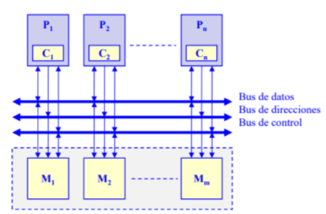
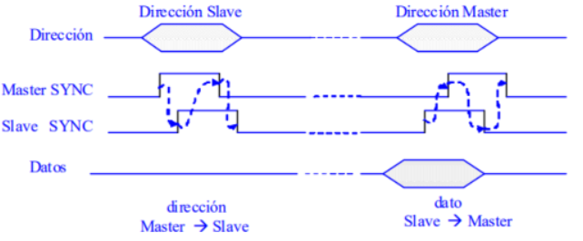
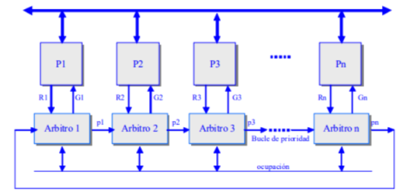
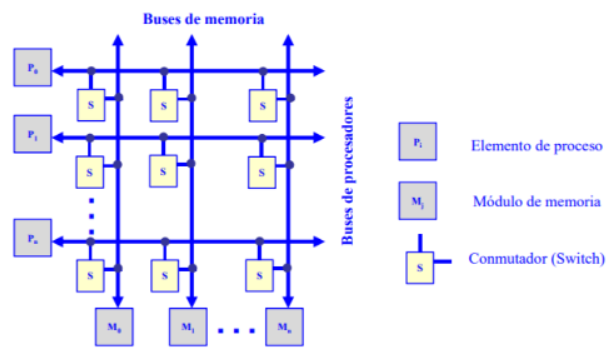
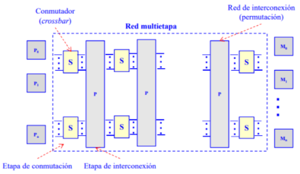

4.3 Sistemas de memoria compartida (multiprocesadores)
* Todos los procesadores acceden a una memoria común.
* La comunicación entre procesadores se hace a través de la
memoria.
* Se necesitan primitivas de sincronismo para asegurar el
intercambio de datos.

Multiprocesadores de memoria compartida.
Estructura de los multiprocesadores de memoria compartida.
La mayoría de los multiprocesadores comerciales son del tipo UMA
(Uniform Memory Access): todos los procesadores tienen igual
tiempo de acceso a la memoria compartida. En la arquitectura UMA
los procesadores se conectan a la memoria a través de un bus, una
red multietapa o un conmutador de barras cruzadas (red multietapa o
un conmutador de barras cruzadas (crossbar crossbar) y disponen de
su propia ) y disponen de su propia memoria caché. Los
procesadores tipo NUMA (Non Uniform Memory Access) presentan
tiempos de acceso a la memoria compartida que dependen de la
ubicación del elemento de proceso y la memoria.

4.3.1 Redes de interconexión dinámica (indirecta).
Medio compartido.
Conexión por bus compartido.
Es la organización más común en los computadores personales y
servidores.
El bus consta de líneas de dirección, datos y control para
implementar:
* El protocolo de transferencias de datos con la memoria.
* El arbitraje del acceso al bus cuando más de un procesador
compite por utilizarlo.
Los procesadores utilizan cachés locales para:
* Reducir el tiempo medio de acceso a memoria, como en un
monoprocesador.
* Disminuir la utilización del bus compartido.

Multiprocesadores de memoria compartida: conexión por bus compartido.
Protocolos de transferencia de ciclo partido.
La operación de lectura se divide en dos transacciones no continuas
de acceso al bus. La primera es de petición de lectura que realiza el
máster (procesador) sobre el slave (memoria). Una vez realizada la
petición el máster abandona el bus. Cuando el slave dispone del dato
leído, inicia un ciclo de bus actuando como máster para enviar el
dato al antiguo máster, que ahora actúa como slave.

Protocolos de transferencia de ciclo partido.
Protocolo de arbitraje distribuido
La responsabilidad del arbitraje se distribuye por los diferentes
procesadores conectados al bus.

Protocolo de arbitraje distribuido.
Arbitro-i concede el bus al procesador Pi activando Gi si:
1. Pi ha activado su línea de petición de bus Ri.
2. La línea de ocupación está desactivada.
3. La línea de entrada de prioridad pi-1 está activada.
El árbitro i activa su línea de prioridad pi si:
1. Pi no ha activado su línea de petición Ri.
2. La línea de prioridad pi-1 está activa.
3. Finaliza una operación de acceso al bus.
Conmutadas.
Conexión por conmutadores crossbar.
Cada procesador (Pi) y cada módulo de memoria (Mi) tienen su
propio bus. Existe un conmutador (S) en los puntos de intersección
que permite conectar un bus de memoria con un bus de procesador.
Para evitar conflictos cuando más de un procesador pretende acceder
al mismo módulo de memoria se establece un orden de prioridad. Se
trata de una red sin bloqueo con una conectividad completa pero de
alta complejidad.

Multiprocesadores de memoria compartida: conexión por conmutadores crossbar.
Conexión por red multietapa.
* Representan una alternativa intermedia de conexión entre el
bus y el crossbar.
* Es de menor complejidad que el crossbar pero mayor que el
bus simple.
* La conectividad es mayor que la del bus simple pero menor
que la del crossbar.
* Se compone de varias etapas alternativas de conmutadores
simples y redes de interconexión.

En general las redes multietapa responden a este esquema.